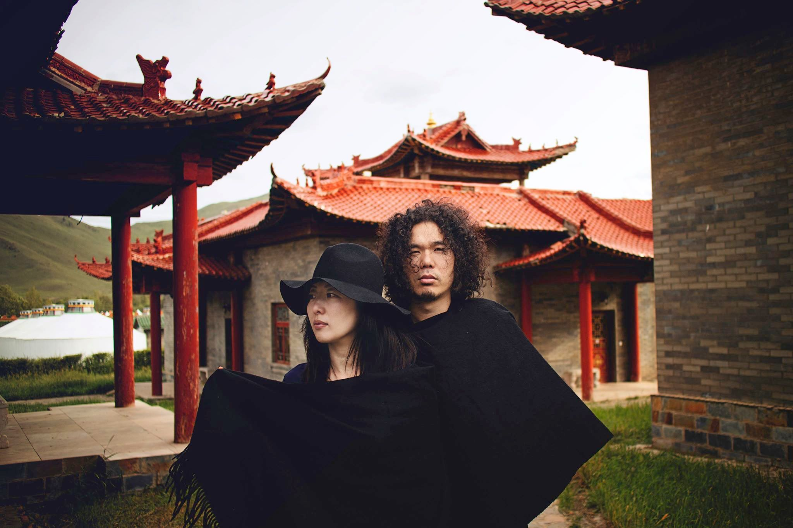

Coppe’ 24 RPM tour, feat. Uhnellys.
May 25 Ideal Glass, and May 26 Nublu, 2019.
The legendary “godmother of Japanese electronica,” Coppé is a pioneering vocalist, producer and collaborator with Plaid, AtomTM and diverse luminaries. For two decades Coppé’s imprint Mango + Sweetrice Records has staked out adventurous musical ground from her base in Tokyo. She returns to New York in spring 2019 to celebrate 24 years of the label's groundbreaking releases. Featuring Grammy award winning engineer/producer Marc Urselli and acoustic bassist Keith Witty. www.sweetrice.com
From Saitama outside Tokyo, Uhnellys (“Undulators”) are rap-poet Kim and drummer Midi. Live instrumental looping is a jumping off point for febrile guitar, pocket trumpet solos and spoken word storytelling. They appear in New York for a second time after AvanTokyo introduced them to an audience of thousands in their debut performance at the 2018 Brooklyn Botanic Garden Cherry Blossom Festival. www.uhnellys.com
Also to be featured is a duo improvisation by multi-instrumentalist Takuya Nakamura and dancer Azumi O E. Tokyo-born composer Takuya Nakamura’s creative spectrum includes piano, trumpet, turntable and keyboard, fusing jazz, improv and electronic music with diverse artists from Quincy Jones to John Zorn and DJ Shadow. www.pianowarp.com
Kyoto-born Azumi O E is the onetime principal dancer of Butoh co. Vangeline Theatre, with solo work presented from New York to Beijing, and Moscow to Kyoto. Azumi explores interactive tech, surround sound, stage-visual and video-art collaborations while fostering her solo career. azumioe.com
AvanTokyo looks beyond anime and idols, probing Japan’s ‘live houses’ and experimental venues, where creators push new forms of expression unreached by mainstream media. Offering Japanese artists performance and residency opportunities in New York, AvanTokyo facilitates cultural interactions between Japan and the United States.
AvanTokyoはアニメやアイドルに留まらず日本のライブハウスや実験的なベニューを探索し、クリエイターの主流メディアでは到達できない新しい表現をサポートしています。日本のアーティストにニューヨークでのパフォーマンスやレジデンスプログラムの機会を提供し、日米間の文化交流を促進しています。